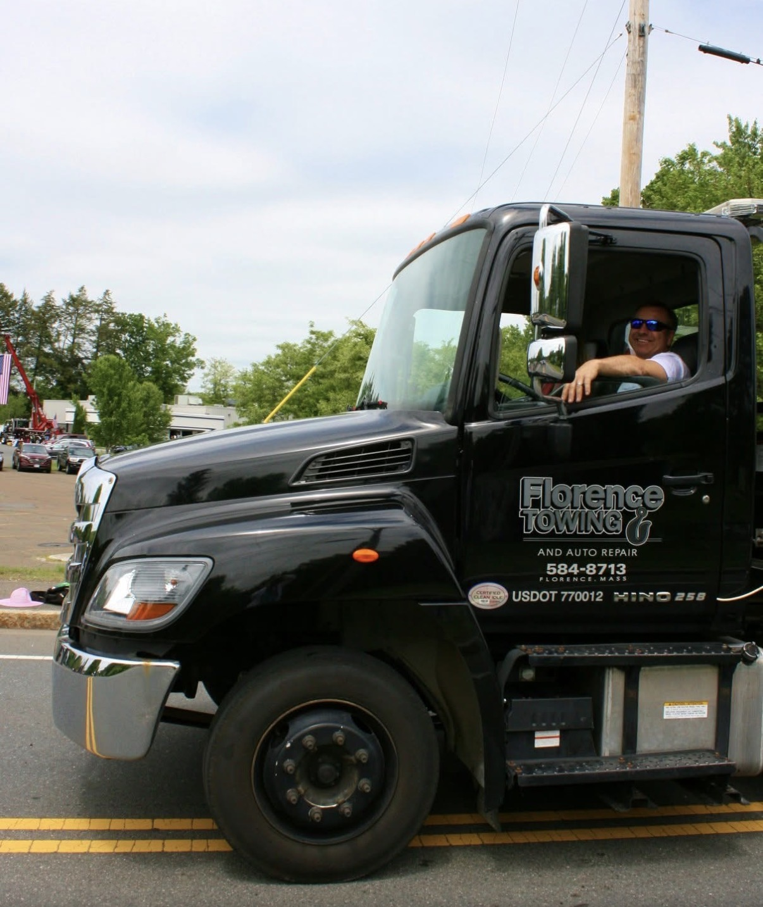
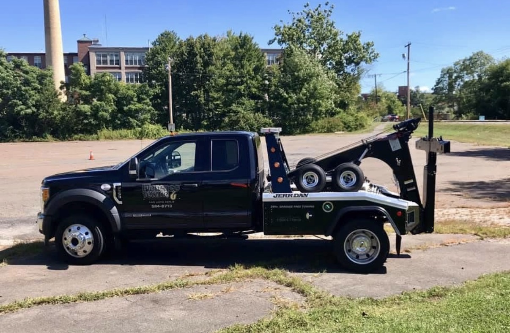
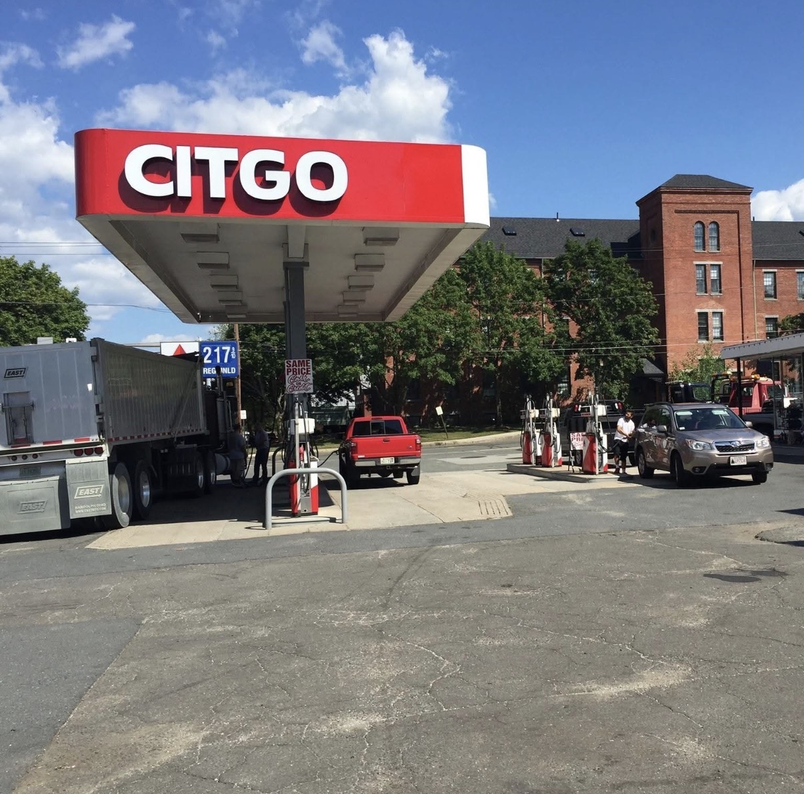
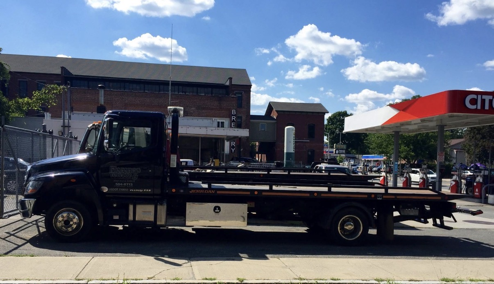

Florence's trusted name in towing and auto repair for over 50 years. 24-hour towing, honest mechanics, and a full-service gas station — all under one roof, right on Main Street.
Florence Towing & Auto Repair has been a fixture on Main Street since 1972. What started as a small family garage has grown into the area's go-to for towing, repair, and fuel — but the family handshake behind it has never changed.
When you call us, you're not getting a call center or a corporate dispatch line. You're getting neighbors who've kept this town moving for over half a century. We treat your car — and your wallet — the way we'd want ours treated.
From a dead battery on a January morning to a full brake job, we do it right the first time and tell you straight what your car needs (and what it doesn't).

From the side of the highway to the bay in our shop, we keep you moving. Here's how we can help.
Day or night, holidays included. Accidents, breakdowns, lockouts, and recovery — we'll be there fast and get your vehicle where it needs to go.
Engine, transmission, electrical, suspension, and everything in between. Our mechanics handle it all, on every make and model.
Florence's go-to brake and alignment team. Pads, rotors, and four-wheel alignments done right so you stop straight and ride smooth.
Check-engine lights, oil changes, batteries, tune-ups, and seasonal service to keep small problems from becoming big ones.
Fill up the old-fashioned way. Gasoline, diesel, and on-site propane — fuel up while you're here, no pump fumbling required.
Grill tanks, RVs, and more. Pull in and top off your propane right on Main Street — quick, safe, and done by hand.
Black trucks, chrome rigs, and the CITGO station on Main Street — here's the crew you'll see when you call.



In an industry full of fine print, we've built our name on doing right by people. Here's what that looks like.
When you're stranded, minutes matter. Our trucks are local and ready to roll around the clock.
We tell you exactly what your car needs and what it costs — before we touch a wrench.
Half a century in business doesn't happen by accident. It happens by treating people right.
Tow, repair, fuel, and propane all in one place. No running around town to get back on the road.
Based right on Main Street in Florence, we serve drivers throughout the Pioneer Valley. If you've broken down nearby, give us a call — chances are we can reach you.
Towns We Serve
Need a tow right now? Call us — we answer 24/7. For repairs, fuel, or propane, swing by the shop during business hours or drop us a note below.